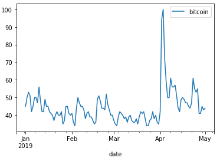

Karpet
Karpet is a tiny library with just a few dependencies for fetching coins/tokens metrics data the internet.
It can provide following data:
- coin/token historical price data (no limits)
- google trends for the given list of keywords (longer period than official API)
What is upcoming?
- Reddit metrics
- Have a request? Open an issue ;)
Dependencies
Library uses a few nifty dependencies and is Python 3.6+ only:
- pandas
- numpy
- coinmarketcap
- pytrends
Usage
Symbol (ticker) -> coninmarketcap.com URL slug conversion.
c = Karpet(date(2019, 1, 1), date(2019, 5, 1))
c.get_coin_slug("BTC") # bitcoin
Retrieving historical data.
c = Karpet(date(2019, 1, 1), date(2019, 5, 1)) df = c.fetch_crypto_historical_data(coin="bitcoin") # Dataframe with historical data df.head()

c = Karpet(*get_last_week()) df = c.fetch_google_trends(kw_list=["bitcoin"]) # Dataframe with trends. df.head()

And with a few lines of code you can get a chart
df = df.set_index("date")
df.plot()

Credits
This is my personal library I use in my long-term project. I can pretty much guarantee it will live for a long time then. I will add new features over time and I more than welcome any help or bug reports. Feel free to open an issue or merge request.
The code is is licensed under MIT license.